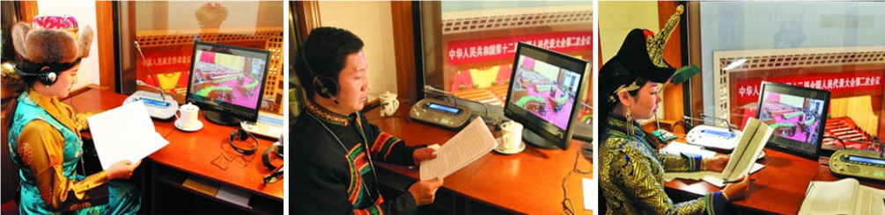

用民族语言传递共和国最美之声
2015年12月11日 来源：《光明日报》

藏语、彝语、蒙古语同声传译人员在人民大会堂的同声传译室里。
《习近平谈治国理政》少数民族文字版。
“朱镕基总理开始作政府工作报告了。在同声传译室的小电视屏上，我能清晰地看到他的神情。我尽快找准语速，用自己民族的语言把声音同步发出。此时此刻，我不是一个普通的翻译，我是民族的代表，代表他们参与共和国的政治生活。自豪、压力、兴奋、紧张
我说不清自己的感觉，只觉热血沸腾，浑身发紧。一场同传下来，身上的衣服都湿透了。”
面前的哈森，讲着她第一次做同声传译的经历，自豪溢于言表。
人民大会堂四楼的同声传译室，是中国民族语文翻译局几代同声传译工作人员的工作场所。在人民大会堂的设计图纸上，那个小小的房间就已经确定，离党中央、国务院最近的位置，留给了民族语文翻译工作者。坐在会场中的少数民族代表委员，在这里，用本民族语言聆听政府工作报告，履行代表委员的职责。从这里，党中央、国务院的声音，以蒙古、藏、维吾尔、哈萨克、朝鲜、彝、壮等民族语言，及时、精准地传达到少数民族地区。
60年，一甲子。不同民族的语言发出同一个声音，使首都边疆、中央地方、领袖群众，心路相通，天涯毗邻。
总理的请柬
随着时间流逝与一代人的离去，共和国民族语文翻译早期的往事，又有几多未付红尘？
1949年年末的一天，维吾尔族翻译家伊布拉音•穆提义收到一张请柬，是周恩来总理的司机送来的，总理请他到家中做客。之前，伊布拉音作为翻译随新疆的妇女代表来京，参加亚非妇女代表会议。会后，周总理将他留下，请他到中央民族事务委员会参事室做了参事。
“在中南海总理的住处，邓大姐热情地接待了我们：‘今天，我们设便宴招待参加亚非妇女代表会议的翻译同志们，总理等一会儿就来。’我们正用餐时，总理回来了。他脱下外衣转过身来的第一句话就是：‘对不起，我迟到了！’接着又热情洋溢地说：‘大家辛苦了！你们圆满地完成了新中国成立后第一次国际会议的翻译任务，应该好好地总结一下这个经验。今后国内外的翻译工作会越来越多，翻译任务会越来越重，你们是旧中国培养的翻译家，新中国还需要培养更多的翻译家，今天请大家来叙叙，想就此事请诸位敞开发表见解。’听罢英语、法语、德语、俄语翻译们的意见，总理又向我详细询问了维吾尔语翻译人员的情况。”“当晚10点座谈会结束后，其他同志都告辞了，总理又把我单独留下，就在北京设立维吾尔语、哈萨克语及其他民族语文翻译出版机构一事，要我配合民委的同志们积极进行筹备，并叮嘱我不要背上‘旧社会过来的、历史不那么清白’之类的思想包袱，放心大胆地工作，有什么问题他会亲自出来撑腰等等。无比亲切的话语，使我感动得热泪盈眶，为我解除了各种思想顾虑。如果没有敬爱的周总理如此深切的关怀，我当时是不可能留在北京安心工作的。”伊布拉音在他的回忆文章《周总理说：新中国还需要培养出更多的翻译家》中，为我们讲述了他经历的一段往事。“从新中国成立的第一天起，我们敬爱的周总理就对民族语文的翻译出版工作给予了极大的关注。”伊布拉音心中充满感动。
伊布拉音说到的中央民委参事室，在共和国历史上存在的时间很短，1949年至1953年，只有短暂的4年。参事室聚集了少数民族的优秀知识分子，设有蒙古、藏、维吾尔等民族语文翻译组，承担着国家向少数民族群众宣传党的各项方针政策，翻译出版一些重要文件和政治读物的任务。这里还设有资料室、汉文编辑组，专事收集整理少数民族及民族地区情况，向有关部门反映，向其他地区介绍。
1949年9月，开国大典前夕，中国人民政治协商会议召开时，民族语文翻译工作者的身影就出现在会场上。会后不久，蒙、藏、维文版的《共同纲领》等政协会议文件，就送到了各族群众手中。
1954年9月，第一届全国人民代表大会召开。新中国第一部宪法在会上通过。就是在这次会上，首次设立民族语文翻译组，这成为用少数民族语言文字翻译大会文件和同声传译的滥觞。翻译组阵容赫赫：国家民委常务副主任汪锋任组长，赛福鼎•艾则孜、萨空了、平措汪杰任副组长。《中华人民共和国宪法》，全国人大、国务院、人民法院、人民检察院、地方各级人大和地方各级人民委员会5个组织法，政府工作报告
一件件法律文本，一个个重要文件，第一次被翻译成蒙古、藏、维吾尔、哈萨克、朝鲜等5种民族文字，少数民族代表第一次用自己民族的语言，听到了党中央的声音。
90高龄的庞宝光，是我们今天还能找到的共和国早期民族语文翻译事业为数不多的见证人之一。“大会翻译组抽调的蒙、藏、维3个文种的翻译人员达100多人，仅藏文就有70多人。”这个细节在老人的记忆中依然清晰。
时间流逝，今天我们已无法重回现场，感知这“第一次”在少数民族群众心中激起的感情波澜，但历史告诉我们，那一刻，当家作主的自豪感在少数民族群众心中洋溢。
百废待兴的新中国，到处都是建设的繁忙。
1955年12月1日，由时任全国人大常委会常务副秘书长张苏、国家民委常务副主任汪锋、国务院机关事务管理局局长刘墉如联名递呈的“关于建立民族语文翻译机构的问题”报告，送到时任国务院秘书长习仲勋手中。
12月6日，习仲勋在文件上批示：“拟同意在民委会成立翻译局，担任少数民族语文翻译工作。开始人数可少而精，后再培养，请总理核批。”
六天后，这份报告上，留下共和国总理周恩来苍劲的字迹：“同意。”
同一天，1955年的12月12日，民族语文翻译的国家队——中国民族语文翻译局诞生了。从这一天开始，来自内蒙古、西藏、新疆、青海、甘肃、四川、吉林、辽宁、黑龙江等地的少数民族优秀儿女，承担起光荣而艰巨的历史使命，为党和国家在民族地区架起了一座沟通、交流、团结、进步的桥梁。
国家设立专事少数民族语言文字翻译的机构，中华人民共和国开创了世界的唯一。“各民族都有使用和发展自己的语言文字的自由”的宪法精神再一次生动体现。从那时起，在共和国日新月异的变化中，始终活跃着民族语文工作者的身影。共和国多民族大家庭的政治生活中，民族语文翻译如同水、空气、阳光，须臾不曾离开。
最美的声音从这里发出
大年初三，春节喜气正浓。壮族翻译家关仕京告别了家人，从南宁赶赴北京两会封闭工作驻地。这一天，由12个民族、近200人组成的两会民族语文翻译队伍开始集结。队伍中的大多数人，在爆竹声中告别家人，从不同的民族聚居区踏上返京归途。
“2015年度的《政府工作报告》，篇幅大，新词术语多，涉及领域广，‘精准翻译’面临挑战。工作人员驻地在郊区，距离人民大会堂较远，大家起早贪黑地工作，常常备稿到深夜，很是辛苦。”翻译局党委书记兰智奇说。与此同时，翻译局承担的《习近平谈治国理政》五种少数民族文字版的翻译工作，也到了最后阶段。“一时间，两条战线作战，工作量很大。但大家全力以赴，加班加点，保证了大会翻译和全书翻译均按时完成。”兰智奇的话语中充满敬意与关爱。
60年中，这样的状态是中国民族语文翻译局工作的常态。1950年就在中央民委参事室任秘书的庞宝光，为我们描述了新中国成立初期，民族语文翻译的工作景象：“政协礼堂没有改建前，同声传译的翻译间设在会场西侧的二楼，没有降温设备及隔音设备，为了避免杂音干扰翻译效果，还做了密封。有一年，政协大会在夏天举行，天气特别热，为了照顾翻译人员，大会在翻译间内外都放上了冰块，帮助降温。就是这样，有些译员还是热得受不了，没有办法，就在翻译间内脱了上衣，大汗淋漓仍坚持工作，这种敬业精神实在令人钦佩。”
斗转星移。北京海淀倒座庙一号的二层小楼已成人们的历史记忆，原址上矗立起来的新大楼，是翻译局今天的办公地。从20世纪70年代末至今，办公室常常通宵的灯火通明，是翻译局员工永远的自豪。“那是大家在加班，同传人员在阅读、熟悉稿件。”如今已退休的蒙文翻译家哈图卓日克说。
60年间，中国民族语文翻译局几度更名，机构几经并转，“十年动乱”时甚至曾一度停摆。但民族语文翻译工作却没有片刻停顿。因为，在共和国多民族的大家庭中，它是各民族交往交流交融的纽带与桥梁，它是党的民族政策最真挚的体现，它是共和国民族团结进步事业的重要组成部分。
全国解放初期，少数民族地区发展尚处于落后状态，民族语文对新事物的表达存在着很多困难。比如，“人民”这个极普通的词，在翻译成藏语时，就找不出相对应的词，藏语的“百姓”“庶民”“臣民”等都无法表达当家做主的“人民”这个词的含义。这种情况在当时并不少见，不少新词术语、民族方言成为“拦路虎”，挡在民族间交流沟通的路上。翻译们推敲、切磋，终于，柳暗花明，民族语文翻译找到了前行的路径：赋予本民族通用的近义词以新意；将某个方言意义相同或相近的词，吸收到书面语，推广合用；利用本民族词素（包括方言）创造新词；一半利用本民族词素，一半借用外来语，合成新词；借用外来词
这样一来，大会文件的译文，就成为各少数民族、各方言区都能看得懂、听得懂的当代式的语言文字了。
2013年，“中国梦”进入民族语文翻译的视野。“梦”在维吾尔语、哈萨克语中有不可能实现的意思。经反复调研，征求有关专家意见，最后，翻译局建议使用维吾尔语、哈萨克语中相当于“期盼”的词来指代，将“中国梦”翻译成“中国的愿望”，“愿望”是可以实现的。建议得到了业界人士的认同，目前这个译法已经成为维吾尔语、哈萨克语“中国梦”规范版本，收录在《蒙藏维哈朝彝壮新词术语汇编》中。
飞速发展的时代，催促着翻译局与时俱进的步伐。2010年翻译局承担了国家重大项目——“少数民族语文新词术语规范化建设”，每年组织全国专家开展蒙古、藏、维吾尔、哈萨克、朝鲜、彝、壮7个语种的新词术语规范化工作。目前，共审定了3万多条新词术语。新词术语规范化建设，在准确宣传党和国家方针政策、法律法规中发挥了积极作用，方便了少数民族群众准确学习掌握现代科学技术、文化知识，推动着少数民族语言文字的使用与发展，促进着跨省区民族间的交流和民族学领域的国际交流。
60年，翻译局所做的工作已无法计数。在关系到党和国家前途命运的每一个重要历史时刻，几代民族语文翻译人员，都亲身见证和参与其中。
年复一年，少数民族代表委员手中的民族文版的政府工作报告，凝聚着一代又一代民族语文翻译工作人员的智慧与心血。
一次又一次中国共产党的代表大会上，少数民族代表用自己民族语言倾听着党中央的声音。
民族文版的国务院《关于加快发展民族教育的决定》、习近平主席在纪念中国人民抗日战争暨世界反法西斯战争胜利70周年大会上的讲话
一个接一个的翻译，使少数民族群众在第一时间沐浴党和国家的关怀，和全国人民一起分享着共和国的荣耀。
《资本论》《马克思恩格斯选集》《列宁选集》《毛泽东选集》《周恩来选集》《刘少奇选集》《邓小平文选》《江泽民文选》等经典著作的民族语文翻译，为中国民族语文翻译史增添了崭新的一页，使中国特色社会主义的实践在民族地区生机勃勃。
《红楼梦》《三国演义》等少数民族语文翻译图书、少数民族文学作品、民族学著作
在国际书展上亮相，吸引了外国出版商和读者的目光。多语种民汉双向智能翻译系统、手机维汉智能语音翻译软件，已经在少数民族群众生活中派上用场。
一代代民族语文翻译工作者在接力中完成着自己的使命，他们的汗水、心力，化作雨露滋养着民族团结进步的花朵。从这里，用民族语言发出的共和国最美之声，焕发出各族人民实现伟大的“中国梦”的不竭动力。
民族翻译人的家国情怀
虽是以工作人员的身份参加全国人代会开幕式，但平生第一次去大会堂，哈森与满都拉这两位蒙古族姑娘还是按捺不住内心的激动：“走进大会堂的一刹那，我心中升腾起无限的神圣之感。身上的服装，成为民族的符号。坐在会场，听着耳机中传来亲切的蒙古语，母语的温暖涌遍全身。”
和哈森一样，民族语文翻译的职业自豪，就是这样，在一代代民族语文工作者心中萌生、成长。
朝文翻译金善女走进人民大会堂同声传译室时，还是一个来局不足两年的新兵。但在前辈的言传身教中，她很快对自己工作的意义有了新的理解。“我们拥有的不仅是作为党和国家重要文件、政策、精神传播者的荣耀，在参与越来越多的重要事件翻译的过程中，心中油然而生的是为国家、民族、人民未来发展作出自己贡献的责任感。”
虽然每年两会，哈萨克族的代表委员不到10人，但为两会翻译哈萨克文的工作人员却有20多人。“我们的工作并不是仅仅为参会的代表委员服务，我们是在为一个民族服务，代表委员身后站着的是150万哈萨克族人民。”哈文室老主任、哈萨克族翻译家贾尔肯说。
民族语文翻译局，聚集着各民族的文化精英。
朋斯克，共和国第一代民族语文翻译家，民族语文翻译局第一任局长。这位出席了第一届中国人民政治协商会议、参加过开国大典的前辈，是翻译局人永远的骄傲。“翻译局的工作是党中央、国务院贯彻落实党的民族政策的‘工具’，一定要把党中央、国务院的声音及时准确地用各种少数民族的文字传达到少数民族的心中，增强少数民族群众对党和国家的向心力，维护全国各族人民的大团结。”朋斯克的谆谆话语，今天依然回响在民族语文翻译工作者的耳畔。
彝文翻译谢友仁的“译龄”已超半个世纪。这位翻译局彝文室首位主任，从非专职到专职翻译，为周恩来到温家宝等历届总理、朱德等历届全国人大常委会委员长、邓颖超等历届全国政协主席以及部分代表委员翻译200多次，参加全国两会翻译工作50余次。
1982年，阿力木沙比提考入中央民族大学专修翻译专业。如今，阿力木沙比提的肩上，已经担起了民族语文翻译局局长的担子。这个翻译出身的局长，每年两会，依然会出现在同声传译的现场。他亲自主持着“少数民族语文新词术语规范化建设”国家重大课题，带领着一支精干的民族语文翻译队伍。
已是翻译局“老资格”的藏族翻译家次仁罗布，是读着前辈多色笔的改稿成长起来的。“藏文《红楼梦》的翻译者索朗班觉，正楷、草楷藏文都写得漂亮的藏文翻译张俊卿，汉藏文都精通的龙智博，同声传译非常棒的龙日
都是藏文室的前辈，都给我们上过课。”对前辈的指教一直心存感激的他，如今已经把自己的肩膀放在了年轻人的脚下，讲课、审稿、定稿成了他的主要工作。次仁罗布从前辈们那里得到的，除了翻译的技巧，还有传统。
事业，是美好的，人们以它寄托追求，憧憬崇高，但谁又能否认艰辛、付出乃至牺牲不是其题中应有之义？
1974年，在周恩来总理的提议下，翻译局恢复建制。“国家需要你”，就这么一句呼唤，没有承诺，没有条件，各民族的优秀知识分子从雪域高原、天山南北，从内蒙古草原、白山黑水，从美丽的壮乡、四川大凉山
又一次汇聚北京。因为民族翻译工作的特殊要求，这些年轻人几乎都是从小生活在民族地区，接受本民族母语教育的孩子。他们中很多人的童年，贫困与艰辛如影相随。工作了，却又与亲人山水相隔，相距千里。
藏文室主任、资深藏文翻译达哇才让的生活轨迹，是他们的缩影。青海省黄南州尖扎县如其村，一个半农半牧的小村庄，达哇才让就出生在那里。“我小时候，家乡的藏族家庭，如果有三个以上的男孩，通常这样分配：一个进寺庙当僧人，一个去上学，还有一个留在家里放羊。我家兄弟五个，没人出家，哥哥们都上学了，我排行老四，是留在家里放羊的那个。”直到有一天，父亲毅然决然卖掉了家里所有的羊。“你们兄弟五个除了你都在上学，如果不让你上学，等你长大了会恨我的。”父亲的决定，改变了达哇才让的人生轨迹。
王昌富这个名字后面，是《凉山彝族礼俗》《彝族妇女文学概说》《彝族古代文明史》等一串著述。这位著名彝族历史文化学者，从大凉山走来。饥饿与贫困，曾是他儿时每天都要面对的问题。“高中两年，我每天想的第一件事，就是今天的饭如何解决。一天，我突发奇想：想看看吃饱了是什么滋味。那天早上，平时只敢吃一个馒头的我，一口气吃了五个馒头，我不敢再吃了，因为午饭和晚饭已经没了着落。”
儿时苦难相伴，成年乡愁相随。家乡的藏历年，让次仁罗布魂牵梦绕。自从来到翻译局，他就再也没有在家乡过过藏历年，因为，每年的藏历年几乎都与两会召开的时间重叠。听到父亲因脑溢血去世的噩耗，次仁罗布不敢接受那样的事实，整整流了一个星期的泪。他懊悔，因为奔命于工作和生活，忽略了挚爱着的父亲，未能及时带父亲去医院检查治疗。
翻译局每一个来自少数民族地区的人，心中都珍藏着同样的情感。
“惦念起故乡，一切都那么安然随适，心中尽是美好。”西藏独有的地貌，隐藏着另一个世界的草甸子，慢悠悠嚼着甜甜青草的牛马，随风摇曳的青稞、豌豆
“身在故乡，醉心地凝望着这一切；远在他乡，深情地眷恋着这一切。那是我出生的地方，一生都惦念的地方，永远都向往的地方
”次旺边觉这如诗如画的乡情，何尝不是中国民族语文翻译局每一个远离家乡游子心中的眷恋。这些各民族的优秀儿女，把这一切珍藏在内心深处，深情地守望着自己的职责，孜孜矻矻，无怨无悔。因为，他们知道，自己正在架设一座桥梁，维系一个更大的家庭，耕耘一片更广阔的故土。
60年，重任在肩，忘我坚守。在马克思主义中国化的历史进程中，伫立着民族语文翻译工作者群体。
60载，殚精竭虑，春华秋实。民族语文翻译工作者将青春、热血与忠诚，写进共和国事业的辉煌与民族地区的繁荣。
薪尽火传，老一辈怀抱信念从昨天走来，将新中国民族语文翻译的辉煌篇章写进历史。继往开来，新一代在“中国梦”的鼓舞下向明天前行，抒写着新中国民族语文翻译新的传奇。（记者/庄建、殷泓）